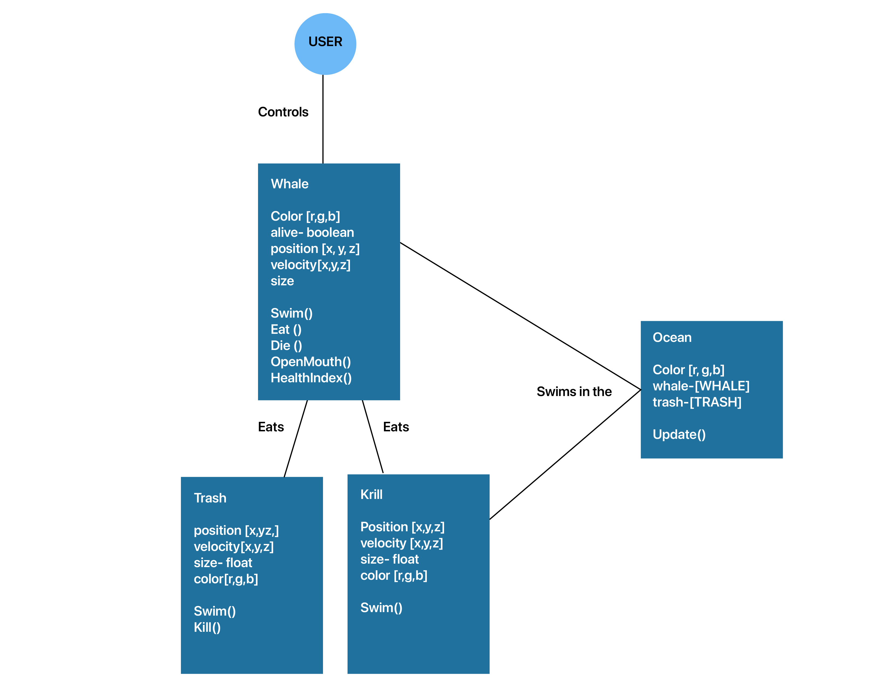
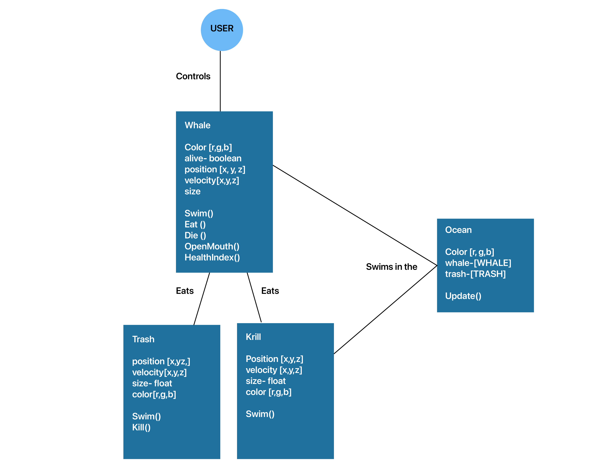

I wanted to depict the ecosystem of the ocean and how trash can kill animals. I wanted to work on this topic because on the news I heard that a lot of plastic waste and
single use products such as masks, latex gloves, etc, were being thrown away in to the ocean.
Using the UML diagram I identified the properties and methods of each objects. I envisioned that my whale would move up and down on the left screen but I realized
that it could be more fun if the whale could move around freely.
I translated my diagram into code by seeing what properties and methods I needed. I realized that the diagram was very helpful process because I got to get an overview of what elements I needed to include.
To me, the best part was when I unintentionally made my game represent what happens in real life more by making it more difficult to drag the trash out of the ocean. While clicking and dragging the trash out of the ocean,
users would add more trash because it isn't easy to select the trash. In real life, it's easier to not create trash in the first place than to clean it up.
For the future, I would like to make it more interactive my allowing the mouse control the whale and display the score.
 
